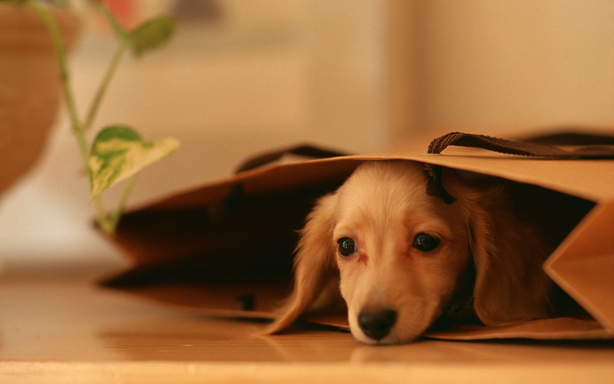
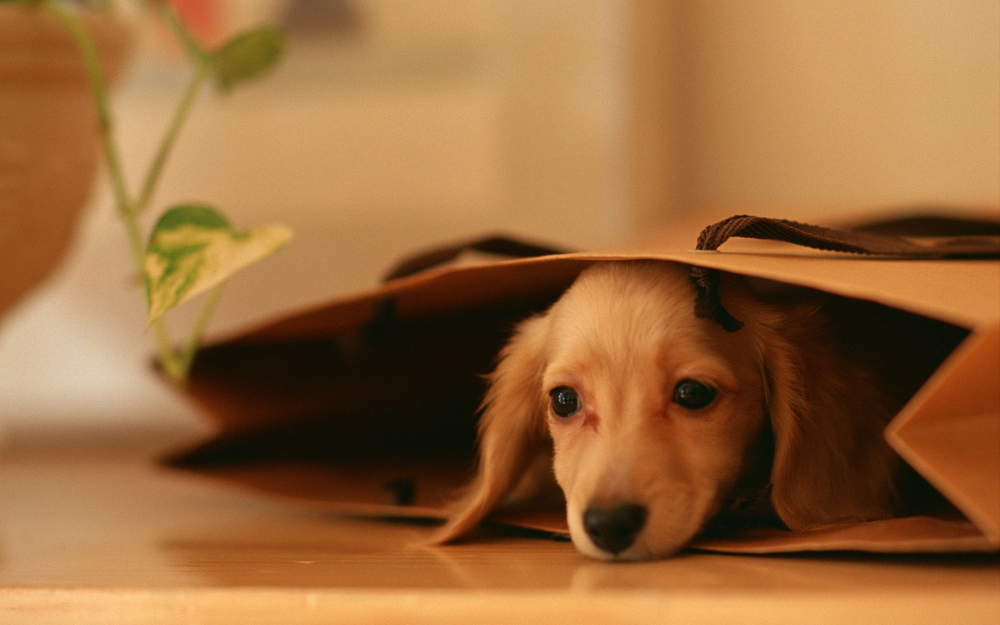

-
Inicio
Padron
Solicitud
Visión:
Ser referente mundial en la defensa de los animales a través de campañas efectivas de eduación y cambos legislativos orientadas a resolver el origen de los problemas que afectan a los animales.
Misión:
Ser referente mundial en la defensa de los animales a través de campañas efectivas de eduación y cambos legislativos orientadas a resolver el origen de los problemas que afectan a los animales.
 



¿Quienes Somos?
Patitas al rescate nació por la falta de alternativas de ayuda al abandono de perros y gatos de la ciudad
hace ya más de diez años.
Debido a que el gobierno los extermina como fauna nociva y los albergues, refugios y antirrábicos
tienen sobre población grave, con terrible atención.
La difusión de persona a persona e tan valiosa que puede significar una oportunidad de vida para ellos.
Evitando pasar por esos lugares que a menudo representan su maltrato y muerte.
!Contactanos!


Patitas al rescate